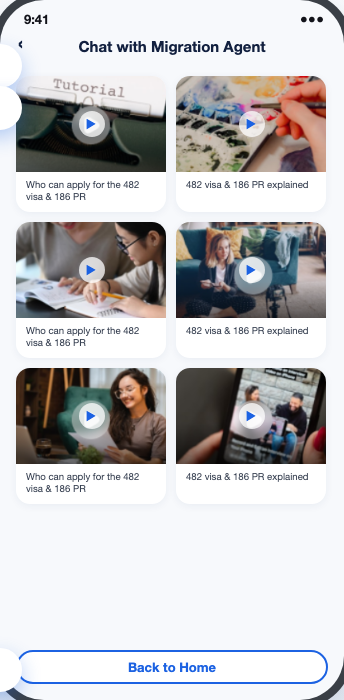
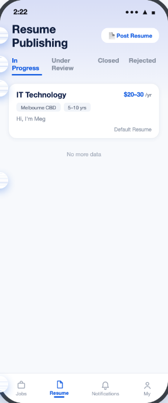
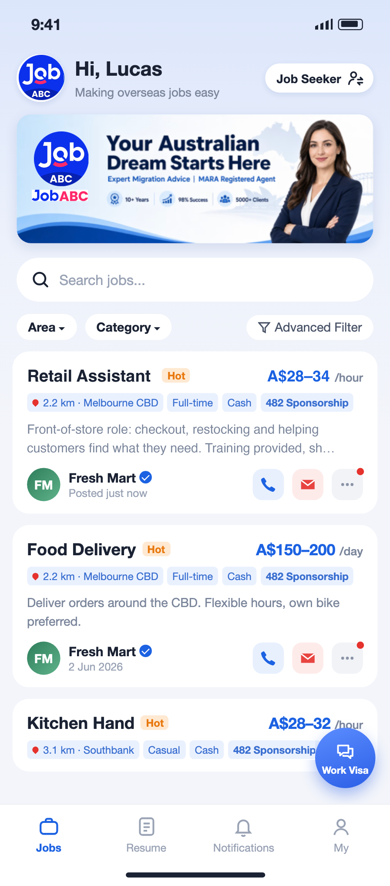
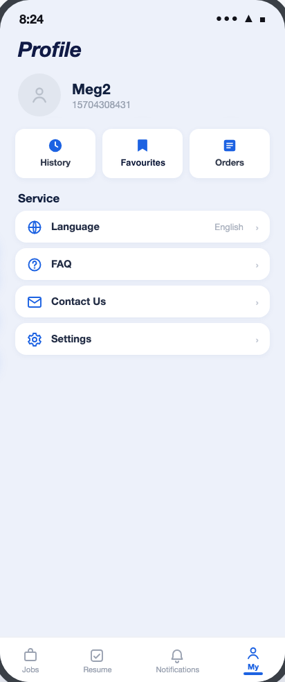
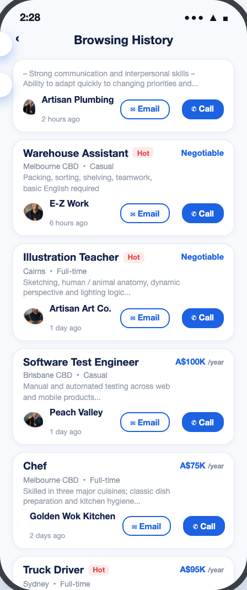

2.2What the Platform Gives a Job Seeker
JOB SEEKER / FOUR THINGS A JOB BOARD DOES NOT DO
Four things the app does that a job board usually does not — publish more
than one profile, reach the employer without a middleman, get a human on the phone, and keep a record of
everything you looked at.
FREELIMITED TIME
A registered agent for visa questions
Limited-time free
Every agent on the list is MARA-registered — specialty, rating and typical reply time are printed before you open anyone.
IN THE APP1.3 Visa Consultation

Several resumes, one default
Switch to the one you want to use
Mark any one as your default resume, and switch whenever you like.
IN THE APP2 Resume Publishing

A direct line to the employer
You talk to them yourself
WeChat, WhatsApp, LINE, KakaoTalk, phone, email — the employer picks which ones to show, and you reach them in the app you already use.
IN THE APP1 Home · Job List · 1.2 Job Detail

Support, and a record of it all
Someone answers, nothing is lost
FAQ and Contact Us give you a real number and real service hours; history, favourites and orders stay under My, so you can go back to a job you saw last week.
IN THE APP4.1 History · 4.2 Favourites · 4.5 FAQ · 4.6 Contact Us


2.2